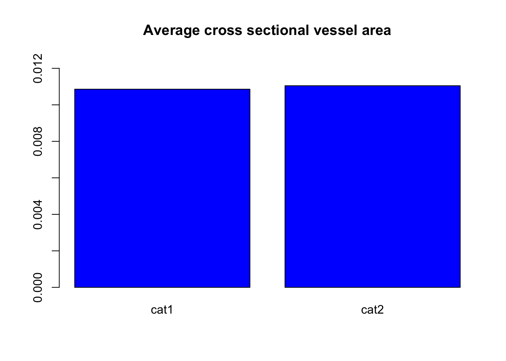

3 Assignment Guide
Let’s explore the data!
Review 7 Best Practices chapter of Quantitative skills for biology. It is best to make a folder on your computer Desktop where you will work on this assignment and to stay organize.
Download the file
wood.csvfrom the course BrightSpace.Review 8.2 Loading or importing data. Open and save a new R Script (see 3.2 Source Pane if you are unsure how to do this). TRY IT! One of the first commands of your R Script will be to load your data, for example:
- In the Console, inspect your data to check that it has loaded. TRY IT! For example:
path to
wood.csv. You might try:the RStudio way of importing your data, or
moving
wood.csvto your working directory.
- After importing the data into R, read through the metadata file to better understand the data.
Metadata Overview Original Article Data used in this exerice originates from a Zanne, A. E., et al. (2010) study. The full article reference can be found below.
Columns in the data frame
Column 1: Family - The taxonomic family of the plant
Column 2: Binomial - Refers to the genus and species for each plant
Column 3: Amm - Average cross sectional vessel area (in \(mm^2\))
Column 4: Nnn - Number of vessels per unit cross section area (in \(mm^2\))
Column 5: F - (F = \(\frac{Amm^2}{Nmm^2}\) Fraction of cross sectional area that is in vessels (in \(mm^2/mm^2\))
Column 6: logA - log10 transformation of Amm (in \(mm^2\))
Column 7: logN - log10 transformation of Nmm (in \(mm^2\))
Column 8: logF - log10 transformation of F (in \(\frac{Amm^2}{Nmm^2}\)
Column 9: Dens - Wood density measurement
Column 10: AbsLat - Average of absolute value of latitude (in degrees)
Reference
Zanne, A. E., Westoby, M., Falster, D. S., Ackerly, D. D., Loarie, S. R., Arnold, S. E. J., & Coomes, D. A. (2010). Angiosperm wood structure: Global patterns in vessel anatomy and their relation to wood density and potential conductivity. American Journal of Botany, 97(2), 207–215. https://doi.org/10.3732/ajb.0900178
## Family Binomial A.mm N.mm F
## 1 Rhamnaceae Krugiodendron ferreum 0.002922467 45 0.13151099
## 2 Fabaceae Tamarindus indica 0.010386891 9 0.09348202
## 3 Anacardiaceae Astronium urundeuva 0.009503318 15 0.14254977
## 4 Fabaceae Dalbergia melanoxylon 0.013273229 7 0.09291260
## 5 Fabaceae Swartzia corrugata 0.018385386 4 0.07354154
## 6 Fabaceae Caesalpinia paraguariensis 0.003848451 25 0.09621127
## logA logN logF Dens AbsLat
## 1 -2.534250 1.6532125 -0.8810379 1.35 NA
## 2 -1.983514 0.9542425 -1.0292719 1.28 10.133333
## 3 -2.022125 1.1760913 -0.8460335 1.21 14.000000
## 4 -1.877023 0.8450980 -1.0319254 1.20 4.633333
## 5 -1.735527 0.6020600 -1.1334673 1.20 10.000000
## 6 -2.414714 1.3979400 -1.0167740 1.18 NA- You will want to do some exploration of your data. See 8.4 Handling the data for how to recover the names of the columns for all the data.
## [1] "Family" "Binomial" "A.mm" "N.mm" "F" "logA"
## [7] "logN" "logF" "Dens" "AbsLat"- It is now useful to began thinking about the data. Do you hypothesize a relationship between the data in any of the columns? TRY IT! You might start investigating your hypothesis by making a plot, for example, showing the
Average cross sectional vessel areaandthe number of vessels. To extract a column of the data see 8.4 Handling the data.
Average cross sectional vessel area, in the Console, try:A.mm after the $. TRY IT! Try making your plot:plot(data1$N.mm,data1$A.mm, pch = 19, xlab = "Average cross sectional vessel area", ylab = "Number of vessels per unit cross sectional area", col="blue")
names(data1) or RStudio will producean error.
TRY IT! Can you make a plot of different variables, for example
Wood densityandAverage of absolute value of latitude?TRY IT! What happens if you type
plot(data1$Family, data1$Binomial)in theConsole? Why is this not a very sensible choice for something to plot?To analyze the relation between variables we can use the
cor(x,y,method = "pearson")function. And it will give us a numeric description of the data’s relation (for more information about this topic:)
3.1 Sample with t.test
A one sample test of means compares the mean of a sample to another sample or a pre-specified value and tests for a deviation from that value. More information can be found under [10. Statistics in R] (https://ahurford.github.io/quant-guide-all-courses/statistics.html) of the Quantitative Guide.
In this section, we will give a brief overview of how to perform a sample t-test to compare the average cross sectional vessel area between tall and short plants.
- First produce two variable that contain the two categories of plant you want to investigate.
- Tall (Average plant height greater than 3 meters)
- Short (Average plant height less than 3 meters)
- After creating two variables that contain the two groups, calculate the means and the standard deviations of both groups.
- Once you’ve calculated the mean and standard deviation of the two groups, plot the results to compare the two groups.
barplot(c(mean1,mean2), names.arg = c('cat1','cat2'), main ="Average cross sectional vessel area", ylim = c(0,0.0125), col = c('blue','blue'))
This method can be useful to visualize the difference between two groups, but difficult to determine if the groups are significantly different or not due to random chance.
- Performing a t-test allows us to determine if the groups are statistically different, and provides a measurement of the probability of an observed different could have occurred just by random chance. Here, we want to evaluate \(\alpha = 0.05\), indicating that we are comfortable with a 5% risk of concluding a difference exists when there is no difference. If our p-value is greater than \(\alpha\) both means are not statistically different (based on the datasets). Although, if the p-value is less than \(\alpha\) then both means are statistically different:
##
## Paired t-test
##
## data: cat1[, 3] and cat2[, 3]
## t = -0.052951, df = 9, p-value = 0.9589
## alternative hypothesis: true difference in means is not equal to 0
## 95 percent confidence interval:
## -0.008312154 0.007931926
## sample estimates:
## mean of the differences
## -0.0001901138From the output above, we see that the \(p-value = 0.9589\), indicating that there is not a statistical difference in the average cross sectional vessel area between tall and short plants. Therefore, we can accept the null hypothesis that there is no different in vessel area between tall and short plants.
For more information about t.tests and statistical analysis refer to: https://ahurford.github.io/quant-guide-all-courses/statistics.html